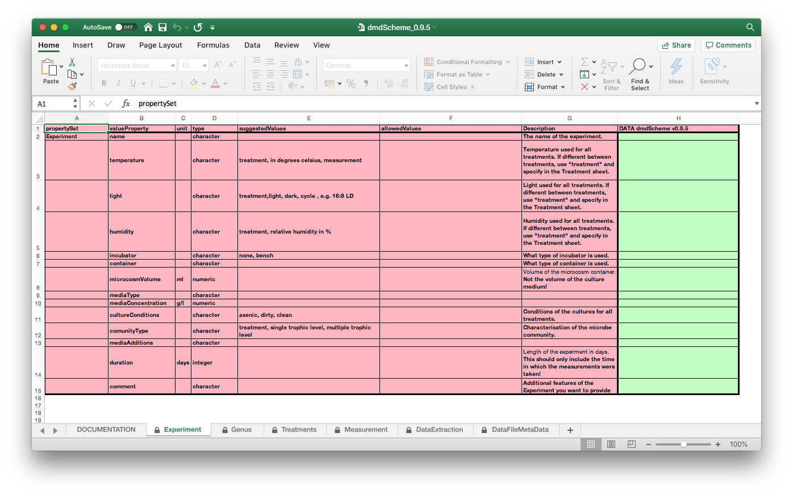

vignettes/r_package_introduction.Rmd
r_package_introduction.RmdThe package dmdScheme is a base package for the usage and development of domain specific metadata schemes. It provides functionality to enter the metadata, validate the entered metadata, and export it to xml format for further processing by e.g. archival repositories. This document will give an overview over the dmdScheme package and what it contains. More detailed information about the development, including a suggested workflow to create a new scheme definition, can be found in the vignette Howto create a new scheme.
The recommended way is to install from CRAN the stable released version:
install.packages("dmdScheme")
To install the master branch, the stable branch which will become the new CRAN release, from the dmdScheme repository on github, run
## install the devtools package if not installed yet # install.packages("devtools") devtools::install_github("Exp-Micro-Ecol-Hub/dmdScheme", ref = "master", build_opts = NULL)
If you are feelinfg adventourous, want to live at the bleeding edge and can live with non-working features, you can install the dev branch. This branch is not stable and features and functionality can appear or be remioved without prior notice:
## install the devtools package if not installed yet # install.packages("devtools") devtools::install_github("Exp-Micro-Ecol-Hub/dmdScheme", ref = "dev", build_opts = NULL)
Other branches are not generally recommended for instalation unless you are developing dmdScheme!
When you load the package, the definition of the scheme is downloaded from the dmdScheme repository installed to a temporary scheme library in a temporary directory for usage in this R session. As this scheme library is styored in a temporary directory, it will be deleted when youu quit your R session and re-downloaded each time you start a new session and load the package. To create a permanent package library you have to create a cache in the user directory. To do this, run
cache(createPermanent = TRUE)
and restart your R session. Noiw the definitions of the installed dmdSchemes will be installed in this user cache and be available permanently. For further info, see the documenatation of the command cache().
Once loaded, the default scheme definition from the package is, when necessary, installed and used.
There are several commands to manage installed schemes. All these commands start with scheme_.
These are in detail:
scheme_default()
returns the default scheme and version, i.e. the one with which the dmdScheme package is based. This can be the dmdScheme package itself, or a package crewated with make_new_package().
scheme_default() #> name version #> 1 dmdScheme 0.9.5
scheme_list_in_repo()
Show the schemes available in a repo. The defaut repo is . The function reads and simly returns the file SCHEME_DEFINITIONS.yaml in the folder schemes in the repository.
scheme_list_in_repo() #> $dmdScheme_0.9.5 #> $dmdScheme_0.9.5$name #> [1] "dmdScheme" #> #> $dmdScheme_0.9.5$version #> [1] "0.9.5" #> #> $dmdScheme_0.9.5$description #> [1] "Demo scheme from the dmdScheme package in R" #> #> #> $emeScheme_0.9.5 #> $emeScheme_0.9.5$name #> [1] "emeScheme" #> #> $emeScheme_0.9.5$version #> [1] "0.9.5" #> #> $emeScheme_0.9.5$description #> [1] "Scheme for Ecological Microcosom Experiments"
scheme_install()
Install a new scheme definition. In the normal usecase, this function uses scheme_download_url() to download the scheme defintion from the default github repository and installs it. The usage is
scheme_install(name = "emeScheme", version = "0.9.5") #> Scheme definition `/var/folders/50/wcr5bjwn75q595n6x82gxj280000gq/T//RtmpXFEJYP/file556d24ef62a9/emeScheme_0.9.5.tar.gz, installed with #> name: emeScheme #> version: 0.9.5
scheme_list()
Shows the installed schemes.
scheme_list() #> name version #> 1 dmdScheme 0.9.5 #> 2 emeScheme 0.9.5
scheme_use()
Activate the scheme NAME with version VERSION
scheme_use(name = "emeScheme", version = "0.9.5") #> Theme switched to emeScheme_0.9.5
scheme_active()
Shows the currently active scheme.
scheme_active() #> name version #> 1 emeScheme 0.9.5 scheme_use(name = "dmdScheme", version = "0.9.5") #> Theme switched to dmdScheme_0.9.5 scheme_active() #> name version #> 1 dmdScheme 0.9.5
scheme_uninstall()
Uninstall an installed scheme. The scheme definition, is deleted from the scheme library, and moved to a temporary flder which wil be deleted at the end of the R session.
scheme_uninstall(name = "emeScheme", version = "0.9.5") #> Scheme emeScheme_0.9.5 deleted and moved to #> [1] "/var/folders/50/wcr5bjwn75q595n6x82gxj280000gq/T//RtmpXFEJYP/file556d3b1d6dd3"
scheme_installed() ReturnTRUE, if the scheme is installedscheme_installed(name = "emeScheme", version = "0.9.5") #> [1] FALSE
scheme_path_xlsx()
Returns the path to the .xlsx representation of the currently active scheme.
scheme_path_xlsx() #> [1] "/var/folders/50/wcr5bjwn75q595n6x82gxj280000gq/T//RtmpXFEJYP/dmdScheme_556d4df427cb/installedSchemes/dmdScheme_0.9.5/dmdScheme_0.9.5.xlsx"
scheme_path_xml()
Returns the path to the .xml representation of the currently active scheme.
scheme_path_xml() #> [1] "/var/folders/50/wcr5bjwn75q595n6x82gxj280000gq/T//RtmpXFEJYP/dmdScheme_556d4df427cb/installedSchemes/dmdScheme_0.9.5/dmdScheme_0.9.5.xml"
To enter new data to the dmdScheme, you have to run the command
This will open Excel and the file should look similar to this, when looking at the second tab:

The following points are important to remember:
After entering the data, save it to a location for further processing.
Next, you have to import the data entered in the Excel sheet into R. For simplicity, we use here a file included in the package. If you want to load your own file, replace scheme_path_xlsx() with the file name and path to that file.
x <- read_excel( file = scheme_path_xlsx(), verbose = TRUE ) #> propertySet : valueProperty #> Transposing... #> Set names... #> Set attributes... #> Apply types... #> Apply type 'character' to 'name'... #> Apply type 'character' to 'temperature'... #> Apply type 'character' to 'light'... #> Apply type 'character' to 'humidity'... #> Apply type 'character' to 'incubator'... #> Apply type 'character' to 'container'... #> Apply type 'numeric' to 'microcosmVolume'... #> Apply type 'character' to 'mediaType'... #> Apply type 'numeric' to 'mediaConcentration'... #> Apply type 'character' to 'cultureConditions'... #> Apply type 'character' to 'comunityType'... #> Apply type 'character' to 'mediaAdditions'... #> Apply type 'integer' to 'duration'... #> Apply type 'character' to 'comment'... #> Set class... #> Done #> propertySet : Genus #> Set names... #> Set attributes... #> Apply types... #> Apply type 'character' to 'speciesID'... #> Apply type 'character' to 'colour'... #> Apply type 'character' to 'density'... #> Apply type 'character' to 'functionalGroup'... #> Apply type 'character' to 'comment'... #> Set class... #> Done #> propertySet : Treatments #> Set names... #> Set attributes... #> Apply types... #> Apply type 'character' to 'treatmentID'... #> Apply type 'character' to 'treatmentLevelHeight'... #> Apply type 'character' to 'comment'... #> Set class... #> Done #> propertySet : Measurement #> Set names... #> Set attributes... #> Apply types... #> Apply type 'character' to 'measurementID'... #> Apply type 'character' to 'variable'... #> Apply type 'character' to 'method'... #> Apply type 'character' to 'unit'... #> Apply type 'character' to 'object'... #> Apply type 'integer' to 'noOfSamplesInTimeSeries'... #> Apply type 'numeric' to 'samplingVolume'... #> Apply type 'character' to 'dataExtractionID'... #> Apply type 'character' to 'measuredFrom'... #> Apply type 'character' to 'comment'... #> Set class... #> Done #> propertySet : DataExtraction #> Set names... #> Set attributes... #> Apply types... #> Apply type 'character' to 'dataExtractionID'... #> Apply type 'character' to 'method'... #> Apply type 'character' to 'parameter'... #> Apply type 'character' to 'value'... #> Apply type 'character' to 'comment'... #> Set class... #> Done #> propertySet : DataFileMetaData #> Set names... #> Set attributes... #> Apply types... #> Apply type 'character' to 'dataFileName'... #> Apply type 'character' to 'columnName'... #> Apply type 'character' to 'columnData'... #> Apply type 'character' to 'mappingColumn'... #> Apply type 'character' to 'type'... #> Apply type 'character' to 'description'... #> Apply type 'character' to 'comment'... #> Set class... #> Done
The verbose = TRUE argument will produce messages which will show you what is happening and will help to identify problems.
dmdScheme Data can be printed by using the print() function. The function has three arguments which control the printout:
printAttr: if TRUE (default) print the basic attributes prefixed with A
printExAttr: if TRUE print the all attributes prefixed with X
printData: if TRUE (default) print the data prefixed with D
print( x, printAttr = FALSE, printExtAttr = FALSE, printData = FALSE ) #> dmdScheme - dmdSchemeSet #> Experiment - dmdSchemeData #> Genus - dmdSchemeData #> Treatments - dmdSchemeData #> Measurement - dmdSchemeData #> DataExtraction - dmdSchemeData #> DataFileMetaData - dmdSchemeData
print( x, printAttr = TRUE, printExtAttr = FALSE, printData = FALSE ) #> dmdScheme - dmdSchemeSet #> Experiment - dmdSchemeData #> A Names : name | temperature | light | humidity | incubator | container | microcosmVolume | mediaType | mediaConcentration | cultureConditions | comunityType | mediaAdditions | duration | comment #> A Units : NA | NA | NA | NA | NA | NA | ml | NA | g/l | NA | NA | NA | days | NA #> A Type : character | character | character | character | character | character | numeric | character | numeric | character | character | character | integer | character #> #> Genus - dmdSchemeData #> A Names : speciesID | colour | density | functionalGroup | comment #> A Units : NA | NA | cells / ml | NA | NA #> A Type : character | character | character | character | character #> #> Treatments - dmdSchemeData #> A Names : treatmentID | treatmentLevelHeight | comment #> A Units : NA | NA | NA #> A Type : character | character | character #> #> Measurement - dmdSchemeData #> A Names : measurementID | variable | method | unit | object | noOfSamplesInTimeSeries | samplingVolume | dataExtractionID | measuredFrom | comment #> A Units : NA | NA | NA | NA | NA | NA | ml | NA | NA | NA #> A Type : character | character | character | character | character | integer | numeric | character | character | character #> #> DataExtraction - dmdSchemeData #> A Names : dataExtractionID | method | parameter | value | comment #> A Units : NA | NA | NA | NA | NA #> A Type : character | character | character | character | character #> #> DataFileMetaData - dmdSchemeData #> A Names : dataFileName | columnName | columnData | mappingColumn | type | description | comment #> A Units : NA | NA | NA | NA | NA | NA | NA #> A Type : character | character | character | character | character | character | character
print( x, printAttr = TRUE, printExtAttr = TRUE, printData = FALSE ) #> dmdScheme - dmdSchemeSet #> Experiment - dmdSchemeData #> A Names : name | temperature | light | humidity | incubator | container | microcosmVolume | mediaType | mediaConcentration | cultureConditions | comunityType | mediaAdditions | duration | comment #> A Units : NA | NA | NA | NA | NA | NA | ml | NA | g/l | NA | NA | NA | days | NA #> A Type : character | character | character | character | character | character | numeric | character | numeric | character | character | character | integer | character #> #> XA propertyName: Experiment #> XA suggestedValues: NA | treatment, in degrees celsius, measurement | treatment,light, dark, cycle , e.g. 16:8 LD | treatment, relative humidity in % | none, bench | NA | NA | NA | NA | axenic, dirty, clean | treatment, single trophic level, multiple trophic level | NA | NA | NA #> XA Description: The name of the experiment. | Temperature used for all treatments. If different between treatments, use "treatment" and specify in the Treatment sheet. | Light used for all treatments. If different between treatments, use "treatment" and specify in the Treatment sheet. | Humidity used for all treatments. If different between treatments, use "treatment" and specify in the Treatment sheet. | What type of incubator is used. | What type of container is used. | Volume of the microcosm container. Not the volume of the culture medium! | NA | NA | Conditions of the cultures for all treatments. | Characterisation of the microbe community. | NA | Length of the experiment in days. This should only include the time in which the measurements were taken! | Additional features of the Experiment you want to provide #> XA row.names: 1 #> XA class: dmdSchemeData | data.frame #> #> Genus - dmdSchemeData #> A Names : speciesID | colour | density | functionalGroup | comment #> A Units : NA | NA | cells / ml | NA | NA #> A Type : character | character | character | character | character #> #> XA propertyName: Genus #> XA suggestedValues: NA | NA | treatment | bacteria, bacterivore, predator, phototroph | NA #> XA allowedValues: NA | NA | NA | NA | NA #> XA Description: Id of the species and strain. Each speciesId has to be unique. | Where the species was obtained from. | Initial density used for all treatments. If different between treatments, use "treatment" and specify in the Treatment sheet. | Functional group of the species. | NA #> XA row.names: 1 | 2 #> XA class: dmdSchemeData | data.frame #> #> Treatments - dmdSchemeData #> A Names : treatmentID | treatmentLevelHeight | comment #> A Units : NA | NA | NA #> A Type : character | character | character #> #> XA propertyName: Treatments #> XA suggestedValues: species, temperatur, light, initial density, comunity composition, densities, dispersal, viscosity, disturbance, communityType | value, variable: freetext | NA #> XA allowedValues: NA | NA | NA #> XA Description: ID of the the treatment decribed in this a row. Each treatmentId can occur multiple times as it can contain multiple treatment levels. | The value of the parameter if the parameter is constant over time, or a description of the variability. If unit is speciesId, comma separated list of all species in the treatment. | NA #> XA row.names: 1 | 2 | 3 | 4 | 5 #> XA class: dmdSchemeData | data.frame #> #> Measurement - dmdSchemeData #> A Names : measurementID | variable | method | unit | object | noOfSamplesInTimeSeries | samplingVolume | dataExtractionID | measuredFrom | comment #> A Units : NA | NA | NA | NA | NA | NA | ml | NA | NA | NA #> A Type : character | character | character | character | character | integer | numeric | character | character | character #> #> XA propertyName: Measurement #> XA suggestedValues: NA | O2 concentration, video, manual count, abundance, DNA | presens Optode, microscopy | %, mmol, count | species, OUT, gene, community, particles | NA | NA | NA | NA | NA #> XA allowedValues: NA | NA | NA | NA | NA | NA | NA | NA | NA | NA #> XA Description: Id of the Measurement process. This includes methodology, variables . Each measurementId specifies one Measurement process and must be unique in this column. Should be in the mapping column in the DataFileMetaData tab. | The variable measured. | Name of the method used. | Unit of the measured variable | The object measured. E.g. species in the case of manual count, gene for genetic analysis, particle for particle counters. | Total number of all samples in the time series. | The sampling volumne. If e.g. atmosphere in container is sampled (oxygen measurements), than enter 0. #> Please use NA if sampling volumne is variable. | as used in the sheet DataExtraction, column dataExtractionID | if measured from the experiment, raw, else the measurementId (first column) of the Measurement it is based on. | NA #> XA row.names: 1 | 2 | 3 | 4 #> XA class: dmdSchemeData | data.frame #> #> DataExtraction - dmdSchemeData #> A Names : dataExtractionID | method | parameter | value | comment #> A Units : NA | NA | NA | NA | NA #> A Type : character | character | character | character | character #> #> XA propertyName: DataExtraction #> XA suggestedValues: NA | bemovi x.y.z | NA | NA | NA #> XA allowedValues: NA | NA | NA | NA | NA #> XA Description: Name of the DataExtraction process. This includes methodology, variables . Each name specifies one extraction process and can occur multiple times in the case of multiple parameters in the analysis. | Method used for the DataExtraction process. If possible including version (in the case of R packages). | parameter in the analysis. Only needs to be specified if it varies from the default. | value of the parameter (you can enter a number or a word) | NA #> XA row.names: 1 #> XA class: dmdSchemeData | data.frame #> #> DataFileMetaData - dmdSchemeData #> A Names : dataFileName | columnName | columnData | mappingColumn | type | description | comment #> A Units : NA | NA | NA | NA | NA | NA | NA #> A Type : character | character | character | character | character | character | character #> #> XA propertyName: DataFileMetaData #> XA suggestedValues: NA | NA | NA | NA | NA | NA | NA #> XA allowedValues: NA | NA | ID, Treatment, Measurement, Species, other | NA | integer, numeric, character, logical, datetime, date, time | NA | NA #> XA Description: the name of the data set. | Name of column in the data file. #> Each column in the data file needs to be documented! #> or NA #> if it is for the whole data file and not specified in the dataFileName | The type of the data in the column. #> ID: ID field (unique ID of unit of replication); #> Treatment: specifies treatment; #> Measurement: contains measurements; #> Species: contains species; #> other: other type of data | columnData = Treatment: #> treatmentID as in the Treatment tab; #> columnData = Species: #> treatmentID refering to species composition as in the Treatment tab #> columnData = Measurement: #> measurementID as in the Measurement tab; #> otherwise: #> NA | Type of the column. | if column contains measurement: General description. If type is datatime, date, or time, give the order of year month day hour minute second as e.g. ymdhms, ymd, or hms. (Do not give any other information, e.g. give nothing about how months are entered (e.g. number or name), or how years, months, day, etc are separated. | NA #> XA row.names: 1 | 2 | 3 | 4 | 5 | 6 | 7 | 8 | 9 | 10 | 11 | 12 | 13 | 14 | 15 | 16 | 17 | 18 | 19 | 20 #> XA class: dmdSchemeData | data.frame
print( x, printAttr = TRUE, printExtAttr = TRUE, printData = TRUE ) #> dmdScheme - dmdSchemeSet #> Experiment - dmdSchemeData #> A Names : name | temperature | light | humidity | incubator | container | microcosmVolume | mediaType | mediaConcentration | cultureConditions | comunityType | mediaAdditions | duration | comment #> A Units : NA | NA | NA | NA | NA | NA | ml | NA | g/l | NA | NA | NA | days | NA #> A Type : character | character | character | character | character | character | numeric | character | numeric | character | character | character | integer | character #> #> XA propertyName: Experiment #> XA suggestedValues: NA | treatment, in degrees celsius, measurement | treatment,light, dark, cycle , e.g. 16:8 LD | treatment, relative humidity in % | none, bench | NA | NA | NA | NA | axenic, dirty, clean | treatment, single trophic level, multiple trophic level | NA | NA | NA #> XA Description: The name of the experiment. | Temperature used for all treatments. If different between treatments, use "treatment" and specify in the Treatment sheet. | Light used for all treatments. If different between treatments, use "treatment" and specify in the Treatment sheet. | Humidity used for all treatments. If different between treatments, use "treatment" and specify in the Treatment sheet. | What type of incubator is used. | What type of container is used. | Volume of the microcosm container. Not the volume of the culture medium! | NA | NA | Conditions of the cultures for all treatments. | Characterisation of the microbe community. | NA | Length of the experiment in days. This should only include the time in which the measurements were taken! | Additional features of the Experiment you want to provide #> XA row.names: 1 #> XA class: dmdSchemeData | data.frame #> #> name temperature light humidity incubator #> D 1 ASR-expt1 20 semi-ambient ambient not given here #> container microcosmVolume mediaType #> D 1 Duran type bottle, red lids, 250ml 100 PPM #> mediaConcentration cultureConditions comunityType #> D 1 0.55 dirty initially unknown #> mediaAdditions #> D 1 Wheat seeds added on specific dates, see file wheat_seed_additions.csv #> duration comment #> D 1 100 <NA> #> #> Genus - dmdSchemeData #> A Names : speciesID | colour | density | functionalGroup | comment #> A Units : NA | NA | cells / ml | NA | NA #> A Type : character | character | character | character | character #> #> XA propertyName: Genus #> XA suggestedValues: NA | NA | treatment | bacteria, bacterivore, predator, phototroph | NA #> XA allowedValues: NA | NA | NA | NA | NA #> XA Description: Id of the species and strain. Each speciesId has to be unique. | Where the species was obtained from. | Initial density used for all treatments. If different between treatments, use "treatment" and specify in the Treatment sheet. | Functional group of the species. | NA #> XA row.names: 1 | 2 #> XA class: dmdSchemeData | data.frame #> #> speciesID colour density functionalGroup #> D 1 tt_1 ATCC 1 bacterivore #> D 2 unknown unknown <NA> unknown #> comment #> D 1 http://www.lgcstandards-atcc.org/products/all/30007.aspx #> D 2 <NA> #> #> Treatments - dmdSchemeData #> A Names : treatmentID | treatmentLevelHeight | comment #> A Units : NA | NA | NA #> A Type : character | character | character #> #> XA propertyName: Treatments #> XA suggestedValues: species, temperatur, light, initial density, comunity composition, densities, dispersal, viscosity, disturbance, communityType | value, variable: freetext | NA #> XA allowedValues: NA | NA | NA #> XA Description: ID of the the treatment decribed in this a row. Each treatmentId can occur multiple times as it can contain multiple treatment levels. | The value of the parameter if the parameter is constant over time, or a description of the variability. If unit is speciesId, comma separated list of all species in the treatment. | NA #> XA row.names: 1 | 2 | 3 | 4 | 5 #> XA class: dmdSchemeData | data.frame #> #> treatmentID treatmentLevelHeight comment #> D 1 Lid_treatment Loose <NA> #> D 2 Lid_treatment Tight <NA> #> D 3 species_1 tt_1, unknown <NA> #> D 4 species_2 unknown <NA> #> D 5 species_3 tt_1 <NA> #> #> Measurement - dmdSchemeData #> A Names : measurementID | variable | method | unit | object | noOfSamplesInTimeSeries | samplingVolume | dataExtractionID | measuredFrom | comment #> A Units : NA | NA | NA | NA | NA | NA | ml | NA | NA | NA #> A Type : character | character | character | character | character | integer | numeric | character | character | character #> #> XA propertyName: Measurement #> XA suggestedValues: NA | O2 concentration, video, manual count, abundance, DNA | presens Optode, microscopy | %, mmol, count | species, OUT, gene, community, particles | NA | NA | NA | NA | NA #> XA allowedValues: NA | NA | NA | NA | NA | NA | NA | NA | NA | NA #> XA Description: Id of the Measurement process. This includes methodology, variables . Each measurementId specifies one Measurement process and must be unique in this column. Should be in the mapping column in the DataFileMetaData tab. | The variable measured. | Name of the method used. | Unit of the measured variable | The object measured. E.g. species in the case of manual count, gene for genetic analysis, particle for particle counters. | Total number of all samples in the time series. | The sampling volumne. If e.g. atmosphere in container is sampled (oxygen measurements), than enter 0. #> Please use NA if sampling volumne is variable. | as used in the sheet DataExtraction, column dataExtractionID | if measured from the experiment, raw, else the measurementId (first column) of the Measurement it is based on. | NA #> XA row.names: 1 | 2 | 3 | 4 #> XA class: dmdSchemeData | data.frame #> #> measurementID variable method unit #> D 1 oxygen concentration DO presens Optode % #> D 2 abundance abundance molecular count #> D 3 smell smell nose rotten eggs or not #> D 4 sequenceData DNA NGS Nucleotide #> object noOfSamplesInTimeSeries samplingVolume #> D 1 community 50 0.0 #> D 2 species 6 0.5 #> D 3 community 6 0.0 #> D 4 DNA fragment 6 0.0 #> dataExtractionID measuredFrom comment #> D 1 none raw <NA> #> D 2 Mol_Analy_pipeline1 sequenceData <NA> #> D 3 none raw <NA> #> D 4 none raw <NA> #> #> DataExtraction - dmdSchemeData #> A Names : dataExtractionID | method | parameter | value | comment #> A Units : NA | NA | NA | NA | NA #> A Type : character | character | character | character | character #> #> XA propertyName: DataExtraction #> XA suggestedValues: NA | bemovi x.y.z | NA | NA | NA #> XA allowedValues: NA | NA | NA | NA | NA #> XA Description: Name of the DataExtraction process. This includes methodology, variables . Each name specifies one extraction process and can occur multiple times in the case of multiple parameters in the analysis. | Method used for the DataExtraction process. If possible including version (in the case of R packages). | parameter in the analysis. Only needs to be specified if it varies from the default. | value of the parameter (you can enter a number or a word) | NA #> XA row.names: 1 #> XA class: dmdSchemeData | data.frame #> #> dataExtractionID method parameter value #> D 1 Mol_Analy_pipeline1 <NA> <NA> <NA> #> comment #> D 1 See description in file xxx.yyy #> #> DataFileMetaData - dmdSchemeData #> A Names : dataFileName | columnName | columnData | mappingColumn | type | description | comment #> A Units : NA | NA | NA | NA | NA | NA | NA #> A Type : character | character | character | character | character | character | character #> #> XA propertyName: DataFileMetaData #> XA suggestedValues: NA | NA | NA | NA | NA | NA | NA #> XA allowedValues: NA | NA | ID, Treatment, Measurement, Species, other | NA | integer, numeric, character, logical, datetime, date, time | NA | NA #> XA Description: the name of the data set. | Name of column in the data file. #> Each column in the data file needs to be documented! #> or NA #> if it is for the whole data file and not specified in the dataFileName | The type of the data in the column. #> ID: ID field (unique ID of unit of replication); #> Treatment: specifies treatment; #> Measurement: contains measurements; #> Species: contains species; #> other: other type of data | columnData = Treatment: #> treatmentID as in the Treatment tab; #> columnData = Species: #> treatmentID refering to species composition as in the Treatment tab #> columnData = Measurement: #> measurementID as in the Measurement tab; #> otherwise: #> NA | Type of the column. | if column contains measurement: General description. If type is datatime, date, or time, give the order of year month day hour minute second as e.g. ymdhms, ymd, or hms. (Do not give any other information, e.g. give nothing about how months are entered (e.g. number or name), or how years, months, day, etc are separated. | NA #> XA row.names: 1 | 2 | 3 | 4 | 5 | 6 | 7 | 8 | 9 | 10 | 11 | 12 | 13 | 14 | 15 | 16 | 17 | 18 | 19 | 20 #> XA class: dmdSchemeData | data.frame #> #> dataFileName columnName columnData #> D 1 dissolved_oxygen_measures.csv Jar_ID ID #> D 2 dissolved_oxygen_measures.csv DO Measurement #> D 3 dissolved_oxygen_measures.csv Unit_1 other #> D 4 dissolved_oxygen_measures.csv Mode other #> D 5 dissolved_oxygen_measures.csv Location other #> D 6 dissolved_oxygen_measures.csv Date_time other #> D 7 dissolved_oxygen_measures.csv Lid_treatment Treatment #> D 8 dissolved_oxygen_measures.csv Jar_type other #> D 9 dissolved_oxygen_measures.csv Jar_ID ID #> D 10 smell.csv <NA> Species #> D 11 smell.csv smell Measurement #> D 12 smell.csv Date other #> D 13 smell.csv Lid_treatment Treatment #> D 14 smell.csv Jar_type other #> D 15 abundances.csv <NA> Species #> D 16 abundances.csv Jar_ID ID #> D 17 abundances.csv Date_time other #> D 18 abundances.csv Lid_treatment Treatment #> D 19 abundances.csv Jar_type other #> D 20 abundances.csv count_number Measurement #> mappingColumn type description comment #> D 1 <NA> character <NA> <NA> #> D 2 oxygen concentration numeric <NA> <NA> #> D 3 <NA> character <NA> <NA> #> D 4 <NA> character <NA> <NA> #> D 5 <NA> character <NA> <NA> #> D 6 <NA> datetime ymdhms <NA> #> D 7 Lid_treatment character <NA> <NA> #> D 8 <NA> character <NA> <NA> #> D 9 <NA> character <NA> <NA> #> D 10 species_1 character <NA> <NA> #> D 11 smell character <NA> <NA> #> D 12 <NA> datetime ymdhms <NA> #> D 13 Lid_treatment character <NA> <NA> #> D 14 <NA> character <NA> <NA> #> D 15 species_3 character <NA> <NA> #> D 16 <NA> character <NA> <NA> #> D 17 <NA> datetime ymdhms <NA> #> D 18 Lid_treatment character <NA> <NA> #> D 19 <NA> character <NA> <NA> #> D 20 abundance numeric <NA> <NA>
The metadata in the spreadsheet can be validated by using the following command and which results in an object of class dmdScheme_validation.
validate( scheme_path_xlsx() ) #> Validating Experiment #> Validating Genus #> Validating Treatments #> Validating Measurement #> Validating DataExtraction #> Validating DataFileMetaData #> $error #> [1] 3 #> #> $details #> [1] NA #> #> $header #> [1] "**<span style=\"color:#FF0000\">Overall MetaData - error</span>**" #> #> $description #> [1] "The result of the overall validation of the data." #> #> $descriptionDetails #> [1] "The details contain the different validations of the metadata as a hierarchical list. errors propagate towards the root, i.e., if the 'worst' is a 'warning' in a validation in `details` the error here will be a 'warning' as well." #> #> $comment #> [1] "" #> #> $structure #> $error #> [1] 0 #> #> $details #> [1] TRUE #> #> $header #> [1] "**<span style=\"color:#00FF00\">Structural / Formal validity - OK</span>**" #> #> $description #> [1] "Test if the structure of the metadata is correct. This includes column names, required info, ... Should normally be OK, if no modification has been done." #> #> $descriptionDetails #> [1] "" #> #> $comment #> [1] "" #> #> attr(,"class") #> [1] "dmdScheme_validation" "list" #> #> $Experiment #> $error #> [1] 0 #> #> $details #> Module errorCode isOK #> 1 types OK TRUE #> #> $header #> [1] "**<span style=\"color:#00FF00\">Experiment - OK</span>**" #> #> $description #> [1] "Test if the metadata concerning **Experiment** is correct. This includes column names, required info, ... " #> #> $descriptionDetails #> [1] "The details are a table with one row per unique validation.\n The column `Module` contains the name of the validation,\n The column `error` contains the actual error of the validation.\n The following values are possible for the column `isTRUE`:\n \n TRUE : If the validation was `OK`.\n FALSE: If the validation was an `error`, `warning` or `note`.\n NA : If at least one v alidation resulted in `NA\n \n One or more FALSE or missing values values will result in an ERROR." #> #> $comment #> [1] "" #> #> $types #> $error #> [1] 0 #> #> $details #> name temperature light humidity incubator container microcosmVolume mediaType #> 1 TRUE TRUE TRUE TRUE TRUE TRUE TRUE TRUE #> mediaConcentration cultureConditions comunityType mediaAdditions duration #> 1 TRUE TRUE TRUE TRUE TRUE #> comment #> 1 <NA> #> #> $header #> [1] "**<span style=\"color:#00FF00\">conversion of values into specified type lossless possible - OK</span>**" #> #> $description #> [1] "Test if the metadata entered follows the type for the column, i.e. integer, characterd, .... The validation is done by verifying if the column can be losslessly converted from character to the columnb type specified. the value NA is allowed in all column types, empty cells should be avoided." #> #> $descriptionDetails #> [1] "The details are a table of the same dimension as the input (green) area of the meatadata sheet. The following values are possible:\n \n FALSE: If the cell contains an error, i.e. can not be losslessly converted.\n TRUE : If the cell can be losslessly converted and is OK.\n NA : empty cell\n \n One or more FALSE values will result in an ERROR." #> #> $comment #> [1] "" #> #> attr(,"class") #> [1] "dmdScheme_validation" "list" #> #> attr(,"class") #> [1] "dmdScheme_validation" "list" #> #> $Genus #> $error #> [1] 1 #> #> $details #> Module errorCode isOK #> 1 types OK TRUE #> 2 suggestedValues note FALSE #> 3 allowedValues OK TRUE #> 4 IDField OK TRUE #> #> $header #> [1] "**<span style=\"color:#55AA00\">Genus - note</span>**" #> #> $description #> [1] "Test if the metadata concerning ** Genus ** is correct. This includes column names, required info, ... " #> #> $descriptionDetails #> [1] "The details are a table with one row per unique validation.\n The column `Module` contains the name of the validation,\n The column `error` contains the actual error of the validation.\n The following values are possible for the column `isTRUE`:\n \n TRUE : If the validation was `OK`.\n FALSE: If the validation was an `error`, `warning` or `note`.\n NA : If at least one v alidation resulted in `NA\n \n One or more FALSE or missing values values will result in an ERROR." #> #> $comment #> [1] "" #> #> $types #> $error #> [1] 0 #> #> $details #> speciesID colour density functionalGroup comment #> 1 TRUE TRUE TRUE TRUE TRUE #> 2 TRUE TRUE <NA> TRUE <NA> #> #> $header #> [1] "**<span style=\"color:#00FF00\">conversion of values into specified type lossless possible - OK</span>**" #> #> $description #> [1] "Test if the metadata entered follows the type for the column, i.e. integer, characterd, .... The validation is done by verifying if the column can be losslessly converted from character to the columnb type specified. the value NA is allowed in all column types, empty cells should be avoided." #> #> $descriptionDetails #> [1] "The details are a table of the same dimension as the input (green) area of the meatadata sheet. The following values are possible:\n \n FALSE: If the cell contains an error, i.e. can not be losslessly converted.\n TRUE : If the cell can be losslessly converted and is OK.\n NA : empty cell\n \n One or more FALSE values will result in an ERROR." #> #> $comment #> [1] "" #> #> attr(,"class") #> [1] "dmdScheme_validation" "list" #> #> $suggestedValues #> $error #> [1] 1 #> #> $details #> speciesID colour density functionalGroup comment #> 1 <NA> <NA> FALSE TRUE <NA> #> 2 <NA> <NA> TRUE FALSE <NA> #> #> $header #> [1] "**<span style=\"color:#55AA00\">values in suggestedValues - note</span>**" #> #> $description #> [1] "Test if the metadata entered is ion the suggestedValues list. The value NA is allowed in all column types, empty cells should be avoided." #> #> $descriptionDetails #> [1] "The details are a table of the same dimension as the input (green) area of the meatadata sheet. The following values are possible:\n \n FALSE: If the cell value is not contained in the suggestedValues list.\n TRUE : If the cell value is contained in the suggestedValues list.\n NA : empty cell or no suggested values specified\n \n One or more FALSE values will result in a WARNING." #> #> $comment #> [1] "" #> #> attr(,"class") #> [1] "dmdScheme_validation" "list" #> #> $allowedValues #> $error #> [1] 0 #> #> $details #> speciesID colour density functionalGroup comment #> 1 <NA> <NA> <NA> <NA> <NA> #> 2 <NA> <NA> <NA> <NA> <NA> #> #> $header #> [1] "**<span style=\"color:#00FF00\">values in allowedValues - OK</span>**" #> #> $description #> [1] "Test if the metadata entered is ion the allowedValues list. The value NA is allowed in all column types, empty cells should be avoided." #> #> $descriptionDetails #> [1] "The details are a table of the same dimension as the input (green) area of the meatadata sheet. The following values are possible:\n \n FALSE: If the cell value is not contained in the allowedValues list.\n TRUE : If the cell value is contained in the allowedValues list.\n NA : empty cell or no allowed values specified\n \n One or more FALSE values will result in an ERROR." #> #> $comment #> [1] "" #> #> attr(,"class") #> [1] "dmdScheme_validation" "list" #> #> $IDField #> $error #> [1] 0 #> #> $details #> hasIDField isOK #> 1 tab has ID field in first column TRUE #> #> $header #> [1] "**<span style=\"color:#00FF00\">ID Field present and in the first column - OK</span>**" #> #> $description #> [1] "Check if the tab's first column contains an ID field, named as `...ID`. This function does not check for uniqueness of this ID field!" #> #> $descriptionDetails #> [1] "Returns a boolean value, with the following possible values:\n \n TRUE : The tab's first column is an ID field\n FALSE : The tab's first column is not an ID field\n \n FALSE will result in an ERROR." #> #> $comment #> [1] "" #> #> attr(,"class") #> [1] "dmdScheme_validation" "list" #> #> attr(,"class") #> [1] "dmdScheme_validation" "list" #> #> $Treatments #> $error #> [1] 1 #> #> $details #> Module errorCode isOK #> 1 types OK TRUE #> 2 suggestedValues note FALSE #> 3 allowedValues OK TRUE #> 4 IDField OK TRUE #> #> $header #> [1] "**<span style=\"color:#55AA00\">Treatments - note</span>**" #> #> $description #> [1] "Test if the metadata concerning ** Treatments ** is correct. This includes column names, required info, ... " #> #> $descriptionDetails #> [1] "The details are a table with one row per unique validation.\n The column `Module` contains the name of the validation,\n The column `error` contains the actual error of the validation.\n The following values are possible for the column `isTRUE`:\n \n TRUE : If the validation was `OK`.\n FALSE: If the validation was an `error`, `warning` or `note`.\n NA : If at least one v alidation resulted in `NA\n \n One or more FALSE or missing values values will result in an ERROR." #> #> $comment #> [1] "" #> #> $types #> $error #> [1] 0 #> #> $details #> treatmentID treatmentLevelHeight comment #> 1 TRUE TRUE <NA> #> 2 TRUE TRUE <NA> #> 3 TRUE TRUE <NA> #> 4 TRUE TRUE <NA> #> 5 TRUE TRUE <NA> #> #> $header #> [1] "**<span style=\"color:#00FF00\">conversion of values into specified type lossless possible - OK</span>**" #> #> $description #> [1] "Test if the metadata entered follows the type for the column, i.e. integer, characterd, .... The validation is done by verifying if the column can be losslessly converted from character to the columnb type specified. the value NA is allowed in all column types, empty cells should be avoided." #> #> $descriptionDetails #> [1] "The details are a table of the same dimension as the input (green) area of the meatadata sheet. The following values are possible:\n \n FALSE: If the cell contains an error, i.e. can not be losslessly converted.\n TRUE : If the cell can be losslessly converted and is OK.\n NA : empty cell\n \n One or more FALSE values will result in an ERROR." #> #> $comment #> [1] "" #> #> attr(,"class") #> [1] "dmdScheme_validation" "list" #> #> $suggestedValues #> $error #> [1] 1 #> #> $details #> treatmentID treatmentLevelHeight comment #> 1 FALSE FALSE <NA> #> 2 FALSE FALSE <NA> #> 3 FALSE FALSE <NA> #> 4 FALSE FALSE <NA> #> 5 FALSE FALSE <NA> #> #> $header #> [1] "**<span style=\"color:#55AA00\">values in suggestedValues - note</span>**" #> #> $description #> [1] "Test if the metadata entered is ion the suggestedValues list. The value NA is allowed in all column types, empty cells should be avoided." #> #> $descriptionDetails #> [1] "The details are a table of the same dimension as the input (green) area of the meatadata sheet. The following values are possible:\n \n FALSE: If the cell value is not contained in the suggestedValues list.\n TRUE : If the cell value is contained in the suggestedValues list.\n NA : empty cell or no suggested values specified\n \n One or more FALSE values will result in a WARNING." #> #> $comment #> [1] "" #> #> attr(,"class") #> [1] "dmdScheme_validation" "list" #> #> $allowedValues #> $error #> [1] 0 #> #> $details #> treatmentID treatmentLevelHeight comment #> 1 <NA> <NA> <NA> #> 2 <NA> <NA> <NA> #> 3 <NA> <NA> <NA> #> 4 <NA> <NA> <NA> #> 5 <NA> <NA> <NA> #> #> $header #> [1] "**<span style=\"color:#00FF00\">values in allowedValues - OK</span>**" #> #> $description #> [1] "Test if the metadata entered is ion the allowedValues list. The value NA is allowed in all column types, empty cells should be avoided." #> #> $descriptionDetails #> [1] "The details are a table of the same dimension as the input (green) area of the meatadata sheet. The following values are possible:\n \n FALSE: If the cell value is not contained in the allowedValues list.\n TRUE : If the cell value is contained in the allowedValues list.\n NA : empty cell or no allowed values specified\n \n One or more FALSE values will result in an ERROR." #> #> $comment #> [1] "" #> #> attr(,"class") #> [1] "dmdScheme_validation" "list" #> #> $IDField #> $error #> [1] 0 #> #> $details #> hasIDField isOK #> 1 tab has ID field in first column TRUE #> #> $header #> [1] "**<span style=\"color:#00FF00\">ID Field present and in the first column - OK</span>**" #> #> $description #> [1] "Check if the tab's first column contains an ID field, named as `...ID`. This function does not check for uniqueness of this ID field!" #> #> $descriptionDetails #> [1] "Returns a boolean value, with the following possible values:\n \n TRUE : The tab's first column is an ID field\n FALSE : The tab's first column is not an ID field\n \n FALSE will result in an ERROR." #> #> $comment #> [1] "" #> #> attr(,"class") #> [1] "dmdScheme_validation" "list" #> #> attr(,"class") #> [1] "dmdScheme_validation" "list" #> #> $Measurement #> $error #> [1] 1 #> #> $details #> Module errorCode isOK #> 1 types OK TRUE #> 2 suggestedValues note FALSE #> 3 allowedValues OK TRUE #> 4 IDField OK TRUE #> #> $header #> [1] "**<span style=\"color:#55AA00\">Measurement - note</span>**" #> #> $description #> [1] "Test if the metadata concerning ** Measurement ** is correct. This includes column names, required info, ... " #> #> $descriptionDetails #> [1] "The details are a table with one row per unique validation.\n The column `Module` contains the name of the validation,\n The column `error` contains the actual error of the validation.\n The following values are possible for the column `isTRUE`:\n \n TRUE : If the validation was `OK`.\n FALSE: If the validation was an `error`, `warning` or `note`.\n NA : If at least one v alidation resulted in `NA\n \n One or more FALSE or missing values values will result in an ERROR." #> #> $comment #> [1] "" #> #> $types #> $error #> [1] 0 #> #> $details #> measurementID variable method unit object noOfSamplesInTimeSeries #> 1 TRUE TRUE TRUE TRUE TRUE TRUE #> 2 TRUE TRUE TRUE TRUE TRUE TRUE #> 3 TRUE TRUE TRUE TRUE TRUE TRUE #> 4 TRUE TRUE TRUE TRUE TRUE TRUE #> samplingVolume dataExtractionID measuredFrom comment #> 1 TRUE TRUE TRUE <NA> #> 2 TRUE TRUE TRUE <NA> #> 3 TRUE TRUE TRUE <NA> #> 4 TRUE TRUE TRUE <NA> #> #> $header #> [1] "**<span style=\"color:#00FF00\">conversion of values into specified type lossless possible - OK</span>**" #> #> $description #> [1] "Test if the metadata entered follows the type for the column, i.e. integer, characterd, .... The validation is done by verifying if the column can be losslessly converted from character to the columnb type specified. the value NA is allowed in all column types, empty cells should be avoided." #> #> $descriptionDetails #> [1] "The details are a table of the same dimension as the input (green) area of the meatadata sheet. The following values are possible:\n \n FALSE: If the cell contains an error, i.e. can not be losslessly converted.\n TRUE : If the cell can be losslessly converted and is OK.\n NA : empty cell\n \n One or more FALSE values will result in an ERROR." #> #> $comment #> [1] "" #> #> attr(,"class") #> [1] "dmdScheme_validation" "list" #> #> $suggestedValues #> $error #> [1] 1 #> #> $details #> measurementID variable method unit object noOfSamplesInTimeSeries #> 1 <NA> FALSE TRUE TRUE TRUE <NA> #> 2 <NA> TRUE FALSE TRUE TRUE <NA> #> 3 <NA> FALSE FALSE FALSE TRUE <NA> #> 4 <NA> TRUE FALSE FALSE FALSE <NA> #> samplingVolume dataExtractionID measuredFrom comment #> 1 <NA> <NA> <NA> <NA> #> 2 <NA> <NA> <NA> <NA> #> 3 <NA> <NA> <NA> <NA> #> 4 <NA> <NA> <NA> <NA> #> #> $header #> [1] "**<span style=\"color:#55AA00\">values in suggestedValues - note</span>**" #> #> $description #> [1] "Test if the metadata entered is ion the suggestedValues list. The value NA is allowed in all column types, empty cells should be avoided." #> #> $descriptionDetails #> [1] "The details are a table of the same dimension as the input (green) area of the meatadata sheet. The following values are possible:\n \n FALSE: If the cell value is not contained in the suggestedValues list.\n TRUE : If the cell value is contained in the suggestedValues list.\n NA : empty cell or no suggested values specified\n \n One or more FALSE values will result in a WARNING." #> #> $comment #> [1] "" #> #> attr(,"class") #> [1] "dmdScheme_validation" "list" #> #> $allowedValues #> $error #> [1] 0 #> #> $details #> measurementID variable method unit object noOfSamplesInTimeSeries #> 1 <NA> <NA> <NA> <NA> <NA> <NA> #> 2 <NA> <NA> <NA> <NA> <NA> <NA> #> 3 <NA> <NA> <NA> <NA> <NA> <NA> #> 4 <NA> <NA> <NA> <NA> <NA> <NA> #> samplingVolume dataExtractionID measuredFrom comment #> 1 <NA> <NA> <NA> <NA> #> 2 <NA> <NA> <NA> <NA> #> 3 <NA> <NA> <NA> <NA> #> 4 <NA> <NA> <NA> <NA> #> #> $header #> [1] "**<span style=\"color:#00FF00\">values in allowedValues - OK</span>**" #> #> $description #> [1] "Test if the metadata entered is ion the allowedValues list. The value NA is allowed in all column types, empty cells should be avoided." #> #> $descriptionDetails #> [1] "The details are a table of the same dimension as the input (green) area of the meatadata sheet. The following values are possible:\n \n FALSE: If the cell value is not contained in the allowedValues list.\n TRUE : If the cell value is contained in the allowedValues list.\n NA : empty cell or no allowed values specified\n \n One or more FALSE values will result in an ERROR." #> #> $comment #> [1] "" #> #> attr(,"class") #> [1] "dmdScheme_validation" "list" #> #> $IDField #> $error #> [1] 0 #> #> $details #> hasIDField isOK #> 1 tab has ID field in first column TRUE #> #> $header #> [1] "**<span style=\"color:#00FF00\">ID Field present and in the first column - OK</span>**" #> #> $description #> [1] "Check if the tab's first column contains an ID field, named as `...ID`. This function does not check for uniqueness of this ID field!" #> #> $descriptionDetails #> [1] "Returns a boolean value, with the following possible values:\n \n TRUE : The tab's first column is an ID field\n FALSE : The tab's first column is not an ID field\n \n FALSE will result in an ERROR." #> #> $comment #> [1] "" #> #> attr(,"class") #> [1] "dmdScheme_validation" "list" #> #> attr(,"class") #> [1] "dmdScheme_validation" "list" #> #> $DataExtraction #> $error #> [1] 0 #> #> $details #> Module errorCode isOK #> 1 types OK TRUE #> 2 suggestedValues OK TRUE #> 3 allowedValues OK TRUE #> 4 IDField OK TRUE #> #> $header #> [1] "**<span style=\"color:#00FF00\">DataExtraction - OK</span>**" #> #> $description #> [1] "Test if the metadata concerning ** DataExtraction ** is correct. This includes column names, required info, ... " #> #> $descriptionDetails #> [1] "The details are a table with one row per unique validation.\n The column `Module` contains the name of the validation,\n The column `error` contains the actual error of the validation.\n The following values are possible for the column `isTRUE`:\n \n TRUE : If the validation was `OK`.\n FALSE: If the validation was an `error`, `warning` or `note`.\n NA : If at least one v alidation resulted in `NA\n \n One or more FALSE or missing values values will result in an ERROR." #> #> $comment #> [1] "" #> #> $types #> $error #> [1] 0 #> #> $details #> dataExtractionID method parameter value comment #> 1 TRUE <NA> <NA> <NA> TRUE #> #> $header #> [1] "**<span style=\"color:#00FF00\">conversion of values into specified type lossless possible - OK</span>**" #> #> $description #> [1] "Test if the metadata entered follows the type for the column, i.e. integer, characterd, .... The validation is done by verifying if the column can be losslessly converted from character to the columnb type specified. the value NA is allowed in all column types, empty cells should be avoided." #> #> $descriptionDetails #> [1] "The details are a table of the same dimension as the input (green) area of the meatadata sheet. The following values are possible:\n \n FALSE: If the cell contains an error, i.e. can not be losslessly converted.\n TRUE : If the cell can be losslessly converted and is OK.\n NA : empty cell\n \n One or more FALSE values will result in an ERROR." #> #> $comment #> [1] "" #> #> attr(,"class") #> [1] "dmdScheme_validation" "list" #> #> $suggestedValues #> $error #> [1] 0 #> #> $details #> dataExtractionID method parameter value comment #> 1 <NA> TRUE <NA> <NA> <NA> #> #> $header #> [1] "**<span style=\"color:#00FF00\">values in suggestedValues - OK</span>**" #> #> $description #> [1] "Test if the metadata entered is ion the suggestedValues list. The value NA is allowed in all column types, empty cells should be avoided." #> #> $descriptionDetails #> [1] "The details are a table of the same dimension as the input (green) area of the meatadata sheet. The following values are possible:\n \n FALSE: If the cell value is not contained in the suggestedValues list.\n TRUE : If the cell value is contained in the suggestedValues list.\n NA : empty cell or no suggested values specified\n \n One or more FALSE values will result in a WARNING." #> #> $comment #> [1] "" #> #> attr(,"class") #> [1] "dmdScheme_validation" "list" #> #> $allowedValues #> $error #> [1] 0 #> #> $details #> dataExtractionID method parameter value comment #> 1 <NA> <NA> <NA> <NA> <NA> #> #> $header #> [1] "**<span style=\"color:#00FF00\">values in allowedValues - OK</span>**" #> #> $description #> [1] "Test if the metadata entered is ion the allowedValues list. The value NA is allowed in all column types, empty cells should be avoided." #> #> $descriptionDetails #> [1] "The details are a table of the same dimension as the input (green) area of the meatadata sheet. The following values are possible:\n \n FALSE: If the cell value is not contained in the allowedValues list.\n TRUE : If the cell value is contained in the allowedValues list.\n NA : empty cell or no allowed values specified\n \n One or more FALSE values will result in an ERROR." #> #> $comment #> [1] "" #> #> attr(,"class") #> [1] "dmdScheme_validation" "list" #> #> $IDField #> $error #> [1] 0 #> #> $details #> hasIDField isOK #> 1 tab has ID field in first column TRUE #> #> $header #> [1] "**<span style=\"color:#00FF00\">ID Field present and in the first column - OK</span>**" #> #> $description #> [1] "Check if the tab's first column contains an ID field, named as `...ID`. This function does not check for uniqueness of this ID field!" #> #> $descriptionDetails #> [1] "Returns a boolean value, with the following possible values:\n \n TRUE : The tab's first column is an ID field\n FALSE : The tab's first column is not an ID field\n \n FALSE will result in an ERROR." #> #> $comment #> [1] "" #> #> attr(,"class") #> [1] "dmdScheme_validation" "list" #> #> attr(,"class") #> [1] "dmdScheme_validation" "list" #> #> $DataFileMetaData #> $error #> [1] 3 #> #> $details #> Module errorCode isOK #> 1 types OK TRUE #> 2 allowedValues OK TRUE #> 3 dataFilesExist error FALSE #> #> $header #> [1] "**<span style=\"color:#FF0000\">DataFileMetaData - error</span>**" #> #> $description #> [1] "Test if the metadata concerning **DataExtraction** is correct. This includes column names, required info, ... " #> #> $descriptionDetails #> [1] "The details are a table with one row per unique validation.\n The column `Module` contains the name of the validation,\n The column `error` contains the actual error of the validation.\n The following values are possible for the column `isTRUE`:\n \n TRUE : If the validation was `OK`.\n FALSE: If the validation was an `error`, `warning` or `note`.\n NA : If at least one v alidation resulted in `NA\n \n One or more FALSE or missing values values will result in an ERROR." #> #> $comment #> [1] "" #> #> $types #> $error #> [1] 0 #> #> $details #> dataFileName columnName columnData mappingColumn type description comment #> 1 TRUE TRUE TRUE <NA> TRUE <NA> <NA> #> 2 TRUE TRUE TRUE TRUE TRUE <NA> <NA> #> 3 TRUE TRUE TRUE <NA> TRUE <NA> <NA> #> 4 TRUE TRUE TRUE <NA> TRUE <NA> <NA> #> 5 TRUE TRUE TRUE <NA> TRUE <NA> <NA> #> 6 TRUE TRUE TRUE <NA> TRUE TRUE <NA> #> 7 TRUE TRUE TRUE TRUE TRUE <NA> <NA> #> 8 TRUE TRUE TRUE <NA> TRUE <NA> <NA> #> 9 TRUE TRUE TRUE <NA> TRUE <NA> <NA> #> 10 TRUE <NA> TRUE TRUE TRUE <NA> <NA> #> 11 TRUE TRUE TRUE TRUE TRUE <NA> <NA> #> 12 TRUE TRUE TRUE <NA> TRUE TRUE <NA> #> 13 TRUE TRUE TRUE TRUE TRUE <NA> <NA> #> 14 TRUE TRUE TRUE <NA> TRUE <NA> <NA> #> 15 TRUE <NA> TRUE TRUE TRUE <NA> <NA> #> 16 TRUE TRUE TRUE <NA> TRUE <NA> <NA> #> 17 TRUE TRUE TRUE <NA> TRUE TRUE <NA> #> 18 TRUE TRUE TRUE TRUE TRUE <NA> <NA> #> 19 TRUE TRUE TRUE <NA> TRUE <NA> <NA> #> 20 TRUE TRUE TRUE TRUE TRUE <NA> <NA> #> #> $header #> [1] "**<span style=\"color:#00FF00\">conversion of values into specified type lossless possible - OK</span>**" #> #> $description #> [1] "Test if the metadata entered follows the type for the column, i.e. integer, characterd, .... The validation is done by verifying if the column can be losslessly converted from character to the columnb type specified. the value NA is allowed in all column types, empty cells should be avoided." #> #> $descriptionDetails #> [1] "The details are a table of the same dimension as the input (green) area of the meatadata sheet. The following values are possible:\n \n FALSE: If the cell contains an error, i.e. can not be losslessly converted.\n TRUE : If the cell can be losslessly converted and is OK.\n NA : empty cell\n \n One or more FALSE values will result in an ERROR." #> #> $comment #> [1] "" #> #> attr(,"class") #> [1] "dmdScheme_validation" "list" #> #> $allowedValues #> $error #> [1] 0 #> #> $details #> dataFileName columnName columnData mappingColumn type description comment #> 1 <NA> <NA> TRUE <NA> TRUE <NA> <NA> #> 2 <NA> <NA> TRUE <NA> TRUE <NA> <NA> #> 3 <NA> <NA> TRUE <NA> TRUE <NA> <NA> #> 4 <NA> <NA> TRUE <NA> TRUE <NA> <NA> #> 5 <NA> <NA> TRUE <NA> TRUE <NA> <NA> #> 6 <NA> <NA> TRUE <NA> TRUE <NA> <NA> #> 7 <NA> <NA> TRUE <NA> TRUE <NA> <NA> #> 8 <NA> <NA> TRUE <NA> TRUE <NA> <NA> #> 9 <NA> <NA> TRUE <NA> TRUE <NA> <NA> #> 10 <NA> <NA> TRUE <NA> TRUE <NA> <NA> #> 11 <NA> <NA> TRUE <NA> TRUE <NA> <NA> #> 12 <NA> <NA> TRUE <NA> TRUE <NA> <NA> #> 13 <NA> <NA> TRUE <NA> TRUE <NA> <NA> #> 14 <NA> <NA> TRUE <NA> TRUE <NA> <NA> #> 15 <NA> <NA> TRUE <NA> TRUE <NA> <NA> #> 16 <NA> <NA> TRUE <NA> TRUE <NA> <NA> #> 17 <NA> <NA> TRUE <NA> TRUE <NA> <NA> #> 18 <NA> <NA> TRUE <NA> TRUE <NA> <NA> #> 19 <NA> <NA> TRUE <NA> TRUE <NA> <NA> #> 20 <NA> <NA> TRUE <NA> TRUE <NA> <NA> #> #> $header #> [1] "**<span style=\"color:#00FF00\">values in allowedValues - OK</span>**" #> #> $description #> [1] "Test if the metadata entered is ion the allowedValues list. The value NA is allowed in all column types, empty cells should be avoided." #> #> $descriptionDetails #> [1] "The details are a table of the same dimension as the input (green) area of the meatadata sheet. The following values are possible:\n \n FALSE: If the cell value is not contained in the allowedValues list.\n TRUE : If the cell value is contained in the allowedValues list.\n NA : empty cell or no allowed values specified\n \n One or more FALSE values will result in an ERROR." #> #> $comment #> [1] "" #> #> attr(,"class") #> [1] "dmdScheme_validation" "list" #> #> $dataFilesExist #> $error #> [1] 3 #> #> $details #> dataFileName IsOK #> 1 dissolved_oxygen_measures.csv FALSE #> 2 smell.csv FALSE #> 3 abundances.csv FALSE #> #> $header #> [1] "**<span style=\"color:#FF0000\">`dataFile` exists in path - error</span>**" #> #> $description #> [1] "Test if all `dataFile` exist in the given `path`. The `error` can have the following values apart from `OK`:\n \n error : If not all `dataFile` exist in the given `path`\n \n" #> #> $descriptionDetails #> [1] "The details are a table with one row per unique `variable` The following values are possible for the column `isTRUE`:\n \n TRUE : If `dataFile` exist in the given `path`\n FALSE: If `dataFile` does not exist in the given `path`\n NA : empty cell\n \n One or more FALSE or missing values will result in an ERROR." #> #> $comment #> [1] "" #> #> attr(,"class") #> [1] "dmdScheme_validation" "list" #> #> attr(,"class") #> [1] "dmdScheme_validation" "list" #> #> attr(,"class") #> [1] "dmdScheme_validation" "list"
To create a report (html, pdf or docx) yo can use the report() function:
report( scheme_path_xlsx() )
which will open a html report in your browser.
You can export the data to an an xml_document object as defined in the xml2 package to do further processing:
x <- read_excel( scheme_path_xlsx() ) xml <- as_xml( x, file = xmlFile) xml #> {xml_document} #> <dmdScheme fileName="dmdScheme_0.9.5.xlsx" dmdSchemeName="dmdScheme" dmdSchemeVersion="0.9.5" propertyName="dmdScheme" output="metadata"> #> [1] <ExperimentList>\n <Experiment>\n <name>ASR-expt1</name>\n <temper ... #> [2] <GenusList>\n <Genus speciesID="tt_1">\n <speciesID>tt_1</speciesID>\ ... #> [3] <TreatmentsList>\n <Treatments treatmentID="Lid_treatment">\n <treatm ... #> [4] <MeasurementList>\n <Measurement measurementID="oxygen concentration">\n ... #> [5] <DataExtractionList>\n <DataExtraction dataExtractionID="Mol_Analy_pipel ... #> [6] <DataFileMetaDataList>\n <DataFileMetaData>\n <dataFileName>dissolved ...
You can save the xml to a file by using
or directly in one command
x <- read_xml( xmlFile ) x #> dmdScheme - dmdSchemeSet #> Experiment - dmdSchemeData #> A Names : name | temperature | light | humidity | incubator | container | microcosmVolume | mediaType | mediaConcentration | cultureConditions | comunityType | mediaAdditions | duration | comment #> A Units : NA | NA | NA | NA | NA | NA | ml | NA | g/l | NA | NA | NA | days | NA #> A Type : character | character | character | character | character | character | numeric | character | numeric | character | character | character | integer | character #> #> name temperature light humidity incubator #> D 1 ASR-expt1 20 semi-ambient ambient not given here #> container microcosmVolume mediaType #> D 1 Duran type bottle, red lids, 250ml 100 PPM #> mediaConcentration cultureConditions comunityType #> D 1 0.55 dirty initially unknown #> mediaAdditions #> D 1 Wheat seeds added on specific dates, see file wheat_seed_additions.csv #> duration comment #> D 1 100 <NA> #> #> Genus - dmdSchemeData #> A Names : speciesID | colour | density | functionalGroup | comment #> A Units : NA | NA | cells / ml | NA | NA #> A Type : character | character | character | character | character #> #> speciesID colour density functionalGroup #> D 1 tt_1 ATCC 1 bacterivore #> D 2 unknown unknown <NA> unknown #> comment #> D 1 http://www.lgcstandards-atcc.org/products/all/30007.aspx #> D 2 <NA> #> #> Treatments - dmdSchemeData #> A Names : treatmentID | treatmentLevelHeight | comment #> A Units : NA | NA | NA #> A Type : character | character | character #> #> treatmentID treatmentLevelHeight comment #> D 1 Lid_treatment Loose <NA> #> D 2 Lid_treatment Tight <NA> #> D 3 species_1 tt_1, unknown <NA> #> D 4 species_2 unknown <NA> #> D 5 species_3 tt_1 <NA> #> #> Measurement - dmdSchemeData #> A Names : measurementID | variable | method | unit | object | noOfSamplesInTimeSeries | samplingVolume | dataExtractionID | measuredFrom | comment #> A Units : NA | NA | NA | NA | NA | NA | ml | NA | NA | NA #> A Type : character | character | character | character | character | integer | numeric | character | character | character #> #> measurementID variable method unit #> D 1 oxygen concentration DO presens Optode % #> D 2 abundance abundance molecular count #> D 3 smell smell nose rotten eggs or not #> D 4 sequenceData DNA NGS Nucleotide #> object noOfSamplesInTimeSeries samplingVolume #> D 1 community 50 0.0 #> D 2 species 6 0.5 #> D 3 community 6 0.0 #> D 4 DNA fragment 6 0.0 #> dataExtractionID measuredFrom comment #> D 1 none raw <NA> #> D 2 Mol_Analy_pipeline1 sequenceData <NA> #> D 3 none raw <NA> #> D 4 none raw <NA> #> #> DataExtraction - dmdSchemeData #> A Names : dataExtractionID | method | parameter | value | comment #> A Units : NA | NA | NA | NA | NA #> A Type : character | character | character | character | character #> #> dataExtractionID method parameter value #> D 1 Mol_Analy_pipeline1 <NA> <NA> <NA> #> comment #> D 1 See description in file xxx.yyy #> #> DataFileMetaData - dmdSchemeData #> A Names : dataFileName | columnName | columnData | mappingColumn | type | description | comment #> A Units : NA | NA | NA | NA | NA | NA | NA #> A Type : character | character | character | character | character | character | character #> #> dataFileName columnName columnData #> D 1 dissolved_oxygen_measures.csv Jar_ID ID #> D 2 dissolved_oxygen_measures.csv DO Measurement #> D 3 dissolved_oxygen_measures.csv Unit_1 other #> D 4 dissolved_oxygen_measures.csv Mode other #> D 5 dissolved_oxygen_measures.csv Location other #> D 6 dissolved_oxygen_measures.csv Date_time other #> D 7 dissolved_oxygen_measures.csv Lid_treatment Treatment #> D 8 dissolved_oxygen_measures.csv Jar_type other #> D 9 dissolved_oxygen_measures.csv Jar_ID ID #> D 10 smell.csv <NA> Species #> D 11 smell.csv smell Measurement #> D 12 smell.csv Date other #> D 13 smell.csv Lid_treatment Treatment #> D 14 smell.csv Jar_type other #> D 15 abundances.csv <NA> Species #> D 16 abundances.csv Jar_ID ID #> D 17 abundances.csv Date_time other #> D 18 abundances.csv Lid_treatment Treatment #> D 19 abundances.csv Jar_type other #> D 20 abundances.csv count_number Measurement #> mappingColumn type description comment #> D 1 <NA> character <NA> <NA> #> D 2 oxygen concentration numeric <NA> <NA> #> D 3 <NA> character <NA> <NA> #> D 4 <NA> character <NA> <NA> #> D 5 <NA> character <NA> <NA> #> D 6 <NA> datetime ymdhms <NA> #> D 7 Lid_treatment character <NA> <NA> #> D 8 <NA> character <NA> <NA> #> D 9 <NA> character <NA> <NA> #> D 10 species_1 character <NA> <NA> #> D 11 smell character <NA> <NA> #> D 12 <NA> datetime ymdhms <NA> #> D 13 Lid_treatment character <NA> <NA> #> D 14 <NA> character <NA> <NA> #> D 15 species_3 character <NA> <NA> #> D 16 <NA> character <NA> <NA> #> D 17 <NA> datetime ymdhms <NA> #> D 18 Lid_treatment character <NA> <NA> #> D 19 <NA> character <NA> <NA> #> D 20 abundance numeric <NA> <NA>